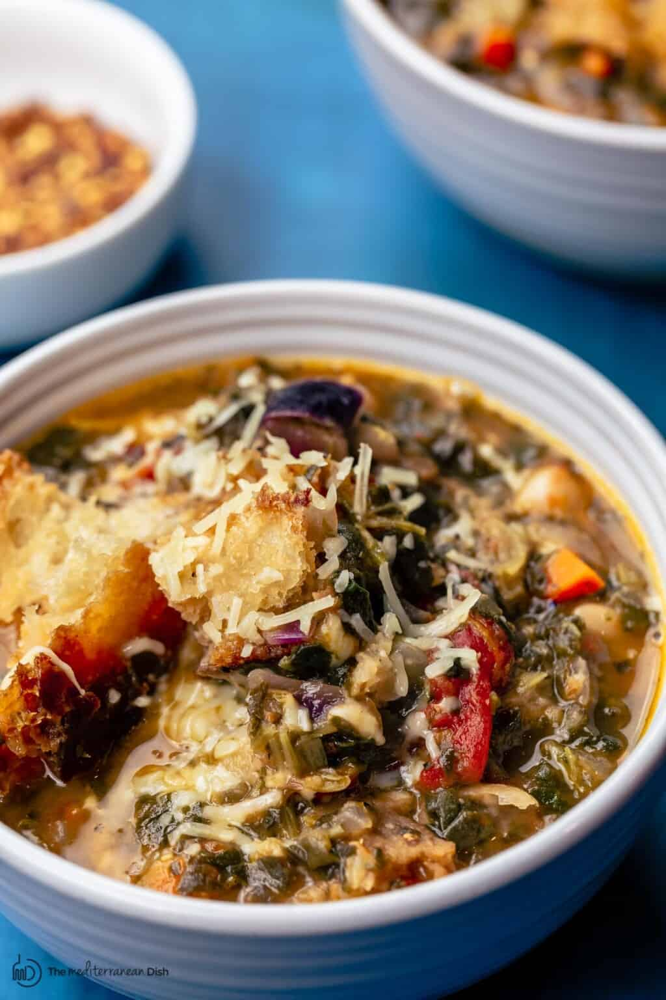

Ribollita (Tuscan White Bean Soup)

Ribollita, pronounced ree-boh-lee-tah, is a Tuscan dish consisting of white beans,herbs, fresh vegetables and bread. It is a hearty, rustic soup that will stick to your ribs!
The key to the flavor is an old parmesan cheese rind. I keep these in the freezer to use for just such an occasion.
Ingredients
- 1 loaf of ciabtta bread (our sour dough)
- Extra virgin olive oil
- 1 large red onion
- 2 celeray stalks
- 2 to 3 carrots peeled and chopped
- 6 garlic cloves
- 28 oz can whoel San Marzano tomatoes
- 1 cup dry white wine
- 4 cups of vegetable broth
- 2 15-oz cans of cannellini beans drained and rinsed
- 2 thyme sprigs
- 1 bay leaf
- 1 teaspoon dry oregano
- 1 lb kale,thick stems and veins removed, chopped
- grated Parmesan cheese, (optional)
Method:
- Heat oven to 400 degress
- Tear bread into large pieces, place on a baking sheet. Drizzle with olive oil. Toss to ensure good coverage. Bake 10-15 minutes until toasted and golden brown.
I like it best when the edges are slightly charred.
- In a large pot, 3 table spoons of olive oil over medium-high heat until shimmering, not smoking. Add onions, celery, and carrots. Sprinkle with kosher salt. Lower heat to medium and cook until soft. Toss regularly.
- When the vegetables are soft, throw in the garlic. Cook for 30 seconds, don't let it brown. The longer you cook garlic, the less intense the flavor becomes.
- Add the tomatoes, white wine, and broth. Cook over medium heat, stir and break up tomatoes with a wooden spoon against the side of the pot. Optionally, you can use a hand-cranked food mill to process the tomatoes into the soup.
- In the bowl of the food processor, fitted with a blade, take 1/2 cup of broth and 1 cup of cannelini beans, and put into the processor. Puree until smooth.
- To the pot, add parmesan rind, fresh thyme, bay leaf, oregaon, crushed red pepper flakes, and a pinch of kosher salt. Stir to combine. Simmer over medium heat for 20 minutes
- After 20 minutes, add the white means, the white bean puree, and fresh kale. Stir to combine. Cook until the kale is tender. Add half of your bread to the soup
- Remove pot from heat. Remove the parmesan rind, bay leaf, and thyme sprigs.
- To serve, ladle soup into bowl, add some more bread, and drizzle with extra virgin olive oil.
Return to Main page